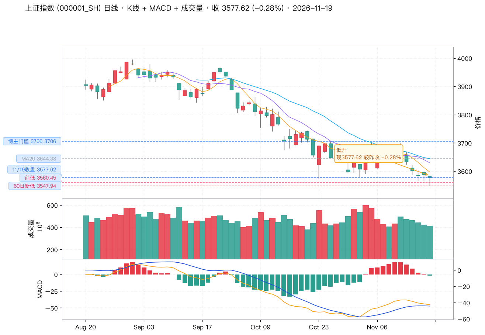
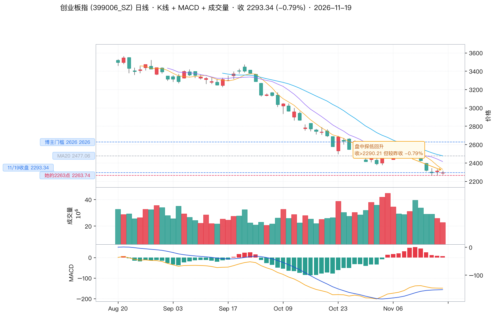
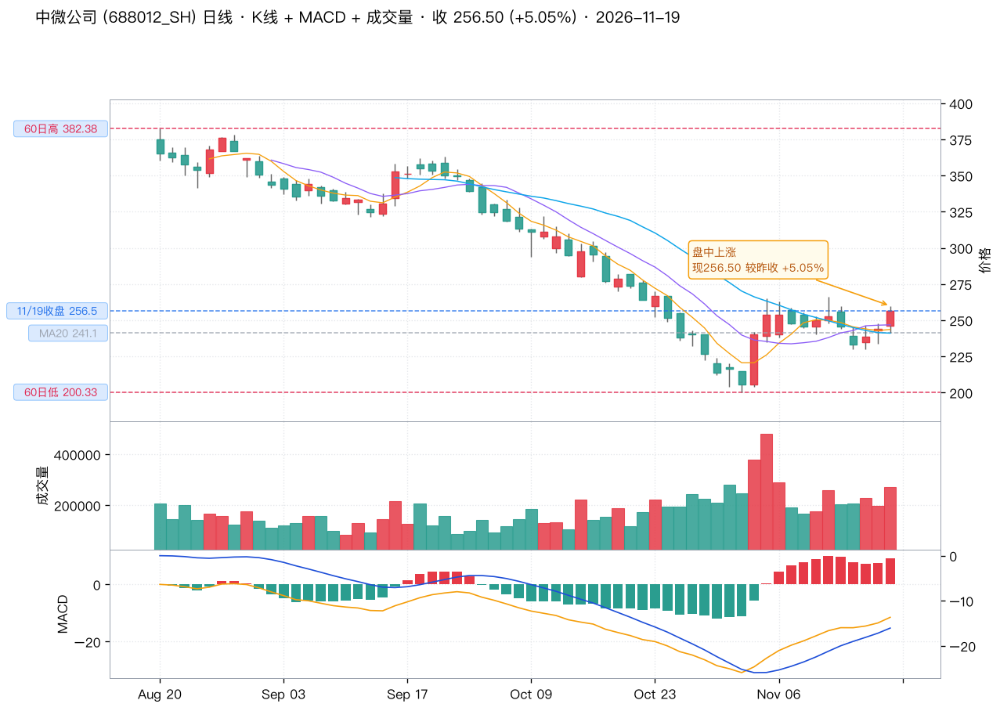
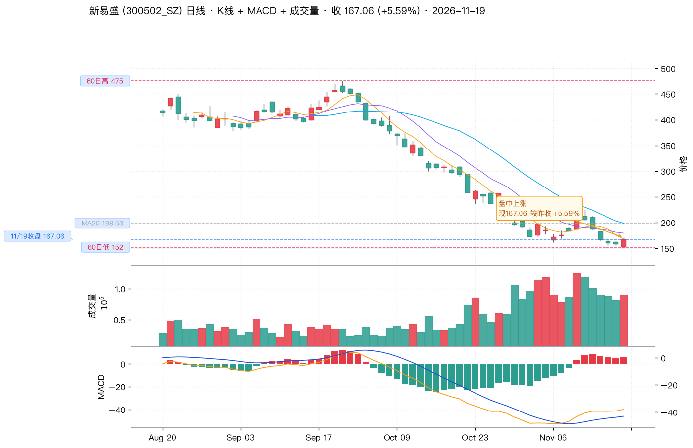
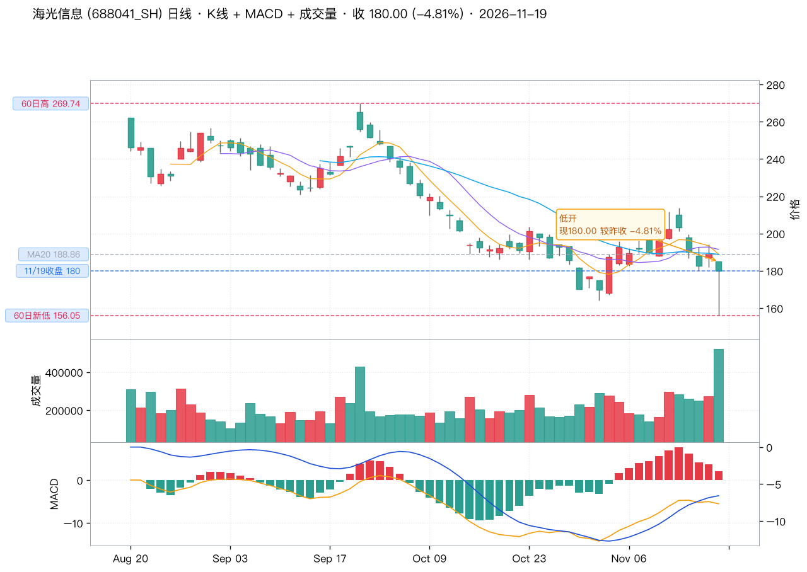

🟢 11:05「以后记住了，必须等C5完成之后才参与！」 —— 纪律写死。 10:55 点名封装、光刻胶、半导体设备局部走红（实测设备 +2.70%、光刻胶 +2.21%，全兑现）； 11:14「燧原 9 个交易日涨翻番，今天被砸了 20 厘米，GPU和CPU集体被砸」→ 两个数字分毫不差。 但今天是最差的一天：沪指再创 60 日新低 3547.94、跌 4876 家、跌停 80 家、成交额 13,063 亿创年内地量。 → 昨天算力涨停潮一日游（8 家涨停今天 0 家）；只做半导体设备 + 光刻胶 + CPO，回踩分批，总仓 ≤2 成。
| 时间 | 信号 | 原文 | 判读 / 日线实测 |
|---|---|---|---|
| 06:31 | ⚪ 外盘 | 昨晚美国股市分化，收盘道指下跌561点，纳指上涨101点、标普下跌17点 | 三个数字分毫不差：11/18 实测道指 −561.25、纳指 +101.51、标普 −16.89。 |
| 10:55 | 🟢🟢 板块点名 | 按目前看，封装，光刻胶，半导体设备等局部走红。 | 全兑现：设备 +2.70%（9 涨 2 跌）、光刻胶 +2.21%（江化微、格林达双涨停）、封装 +1.31%（长电 +4.74%）。 |
| 11:05 | 🟢🟢 纪律固化 | 以后记住了，必须等C5完成之后才参与！ | 把 11/13 的 C5 口径写成硬纪律（赞 1.3 万）。今天 C5 后第一次照做：没抄被砸的 GPU，改在半导体设备找强势。 |
| 11:14 | 🟢🟢 自我验证 | 燧原前面只用了9个交易日差不多涨翻番，今天被砸了20厘米。整体看，今天GPU和CPU板块集体被砸！ | 两个数字分毫不差：燧原 688801 前复权 11/04 低 321.36 → 11/13 高 613.00 = +90.8%（9 个交易日）；今日开 430 即最高、最低=收盘 364.33（−20.00%）。GPU/CPU 池 -4.79%。 |
| 14:49 | 🟡 盘中点位 | 早盘曾大跌17.4%，现在是小跌3.3%....... | 标的 = 海光信息 688041：最低 156.05 = -17.48%（她说 17.4%），发帖时约 −3.3%，收盘 180.00。她没说名字，靠盘面反推。 |
| 14:51 / 14:55 | ⚪ 情绪 | 20多年啦，我一直是大家最熟悉的陌生人…… / 截止目前看，是给了我一个小V.......感谢主力！ | 情绪转暖，对应尾盘从日内低点回拉（沪指 3547.94→3577.62）。 |
| 14:26 | ⚪ 外盘 | 台湾金融监管机构：从周五开始实施新的卖空限制。 | 台股卖空新规，对 A 股无直接映射，不作方向信号。 |
| 20:39 | 🟢 盘后催化 | 长鑫科技公告，回购金额增加至不低于25亿元、不超过50亿元 | 盘后催化，11/20 才交易。长鑫 688825 今日 37.50（+1.60%）、Q3 营收 +738.5%、ROE 84.2% → 存储链支撑，但不能算她提前判断对。 |

开 3583.12 / 高 3584.28 / 低 3547.94 / 收 3577.62。 最低 3547.94 = 又是 60 日新低（前低 3560.45 再破）；3706 差 128.38 点（3.46%），MA20 3644.38 失守。

开 2290.21 / 高 2315.78 / 低 2271.99 / 收 2293.34。 最低 2271.99 > 11/17 的 2263.74 → 她的 2263 点连续第 3 天守住；2626 差 332.66 点（12.67%），MA20 2477.06 远在头顶。
| 板块 | 11/19 收盘实测 | 博主口径 / 打法 |
|---|---|---|
| ① 半导体设备 首选 · 唯一成板块 |
池 11 只 9 涨 2 跌，均值 +2.70%，额 330 亿 中微公司 +5.05%、拓荆科技 +4.75%、拓荆科技 +4.75% |
她 10:55 点名，兑现，今天唯一形成板块的强势方向。中微 +5.05%、拓荆 +4.75%、华海清科 +4.49%、北方华创 +3.13%。只做龙头：中微收 256.50、站上 MA20 241.10、放量 122%、Q3 营收 +28.1%、资产负债 21.7% → 回踩 MA20 不破可分批。 |
| ② 光刻胶 / 材料 情绪主线 · 只做龙头 |
池 12 只 8 涨 4 跌，均值 +2.21%，额 139 亿 格林达 +10.00%、江化微 +9.99%、南大光电 +4.78% |
她 10:55 点名，兑现：江化微、格林达双涨停（均 2 连板），南大光电 +4.78%、彤程新材 +3.00%。 但涨停全是连板情绪票，不符合她「业绩增速」的公式 → 只做有业绩的南大光电（收 43.87、站上 MA20 40.17、放量 159%）。 |
| ③ CPO / 光模块 逆势最抗跌 · 等回踩 |
池 8 只 3 涨 5 跌，均值 -0.07%，额 433 亿 新易盛 +5.59%、中际旭创 +3.05%、天孚通信 +0.24% |
算力链里唯一没被砸的分支（交换机 -8.07%、算力租赁 -3.41%）。新易盛 +5.59%、中际旭创 +3.05%，Q3 营收 +93.0% / +178.1%。 但都在 MA20 之下（差 18.8%）→ 位置最低、趋势未转，等回踩不追高。 |

高 259.98 = 收盘价 / 低 241.50 / 收 256.50，额 67.7 亿。 站上 MA5 243.65 / MA10 246.85 / MA20 241.10；60 日高 382.38 在左上（距今 32.9%），60 日低 200.33 在下方。

高 171.08 / 低 152.00 / 收 167.06，额 146.3 亿（全场最大）。 距 60 日低 152.00 仅 9.9%，但 MA20 198.53 压在头顶 —— 底部区域，未转势。

开 185.00 = 最高 / 低 156.05（60 日新低，-17.48%）/ 收 180.00，额 87.2 亿。 从 189.10 一路砸到 156.05 再收复到 180.00 —— 她发帖时的「小跌 3.3%」就在这段回拉里。
| 项 | 博主口径 | 实测 / 处理 |
|---|---|---|
| 06:31 外盘三数字 分毫不差 | 道指下跌561点，纳指上涨101点、标普下跌17点 | 11/18 实测道指 −561.25、纳指 +101.51、标普 −16.89，三个数字全部对上。外盘播报仍可直接当数据源用。 |
| 11:14 燧原 + GPU/CPU 被砸 分毫不差 | 燧原前面只用了9个交易日差不多涨翻番，今天被砸了20厘米。整体看，今天GPU和CPU板块集体被砸！ | 燧原 688801：11/04 低 321.36 → 11/13 高 613.00 = +90.8%，历时 9 个交易日；今日开 430 即最高，最低=收盘 364.33（−20.00%）。GPU/CPU 池 -4.79%。本期最硬的核验。 |
| 10:55 封装/光刻胶/设备 兑现 | 封装，光刻胶，半导体设备等局部走红 | 设备 +2.70%（9涨2跌）、光刻胶 +2.21%（江化微、格林达双涨停）、封装 +1.31% —— 三个方向全中。 |
| 14:49「早盘曾大跌17.4%」 分毫不差 | 早盘曾大跌17.4%，现在是小跌3.3%....... | 标的 = 海光信息 688041（她没说名字，靠盘面反推）：最低 156.05 = -17.48%，发帖时约 −3.3%，收盘 180.00。 |
| 11/18 21:07「利好国产替代」 被证伪 | #英伟达停止向中国供应H200#利好国产替代！ | 今日 GPU/CPU 池 -4.79%、海光盘中 -17.48% —— 隔夜催化不但没兑现，还成了杀跌理由。 11/19 最该记住的一条：盘后催化 ≠ 次日买点。 |
免责声明：本报告为公开微博内容整理与技术面统计，不构成投资建议； 「3 板块 + 3 个股」是博主观点 + 实测强度的归纳。
报告生成：2026-11-19 收盘版 · 数据源 weibo skill + Tushare Pro 日线 ·
脚本 collect_tushare_20261119.py / collect_pools_20261119.py /
collect_mkt_20261119.py / make_wu2198_charts_20261119.py /
gen_wu2198_report_20261119.py。